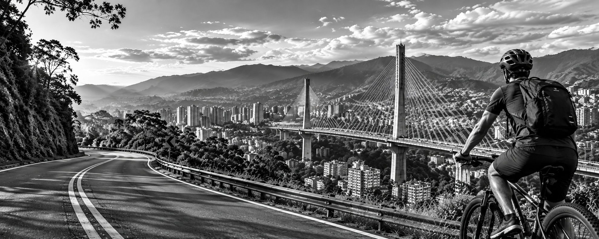

Alquiler de bicicletas
Bicicletas urbanas, de montaña y eléctricas por hora, medio día o día completo.
Ver tarifas

En Rueda Libre te ofrecemos el alquiler de bicicletas en Medellín para que explores la ciudad, disfrutes de sus paisajes y vivas nuevas aventuras sobre ruedas. Ya sea para pasear, hacer ejercicio o descubrir nuevos lugares, ¡tenemos la bicicleta ideal para ti!
Reservar ahoraSomos un negocio de alquiler de bicicletas en Medellín, creado para que disfrutes la ciudad de una manera divertida, saludable y sostenible. Queremos que vivas nuevas experiencias, explores diferentes lugares y recorras cada camino sobre dos ruedas. ¡Anímate a pedalear con nosotros!
Bicicletas urbanas, de montaña y eléctricas por hora, medio día o día completo.
Ver tarifasRevisamos frenos, cadena y llantas.
Explora Medellín con nuestros recorridos en bicicleta.
Consultar recorridos y preciosEn Rueda Libre alquilar tu bicicleta es muy fácil. Sigue estos sencillos pasos:
Incluye candado y casco.
Reservar ahoraVen y recorre Medellín con Rueda Libre.